DEIGINEOR
Ambition Music Development
Soundproducer from Ukraine. From Dark Ambient to massive electronic grooves.
Releases
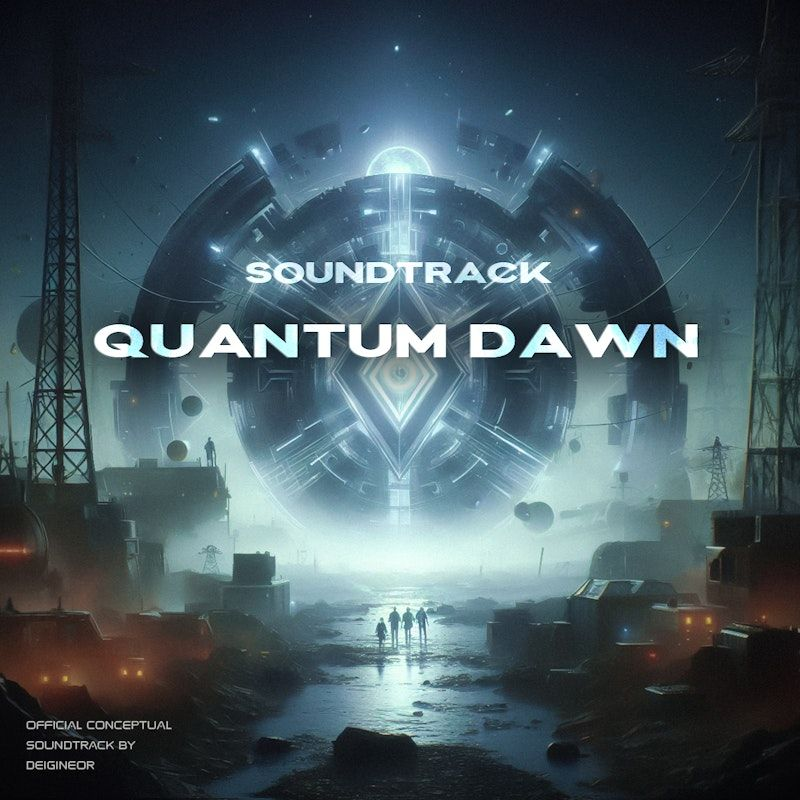
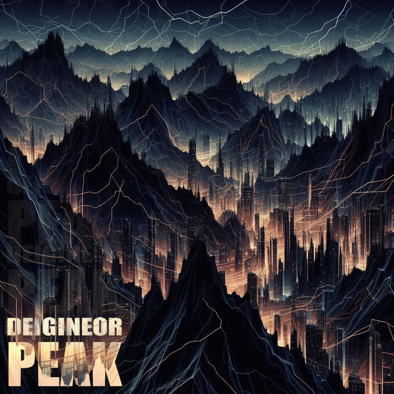
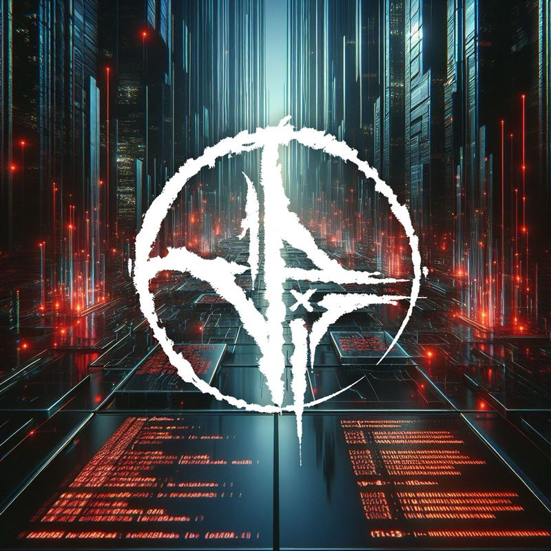
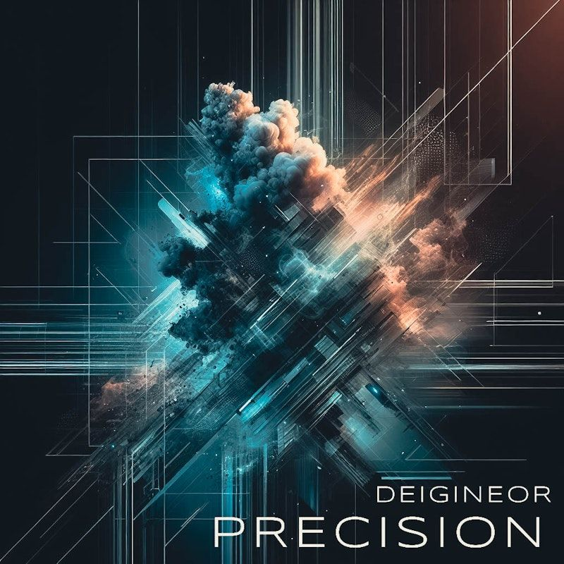
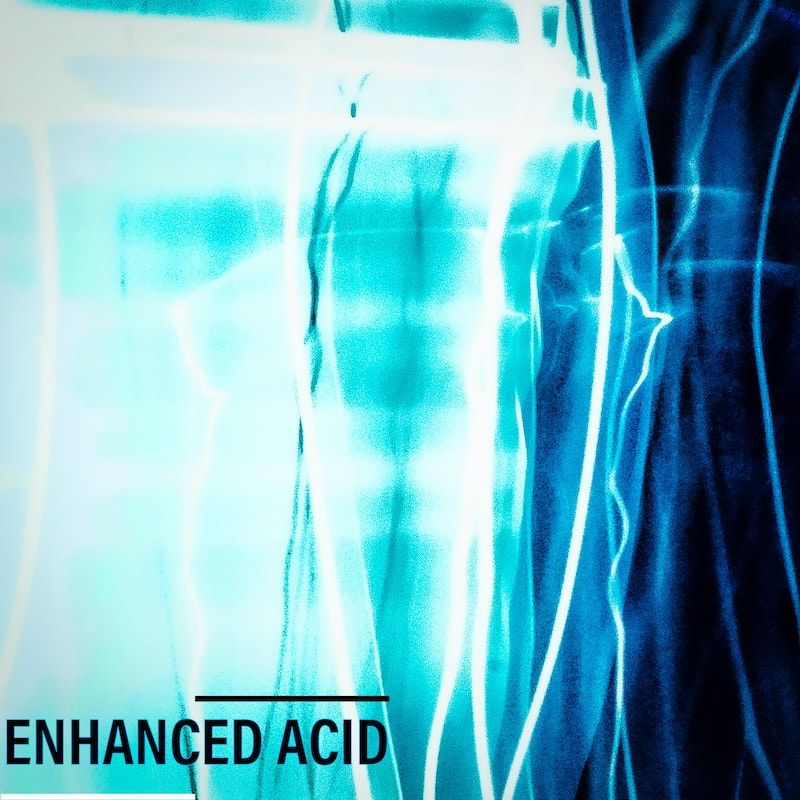
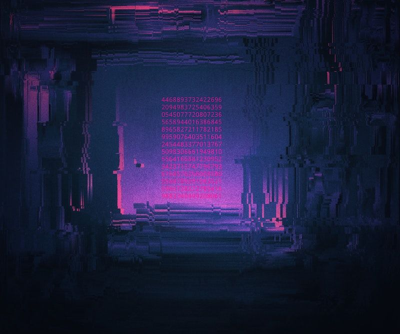
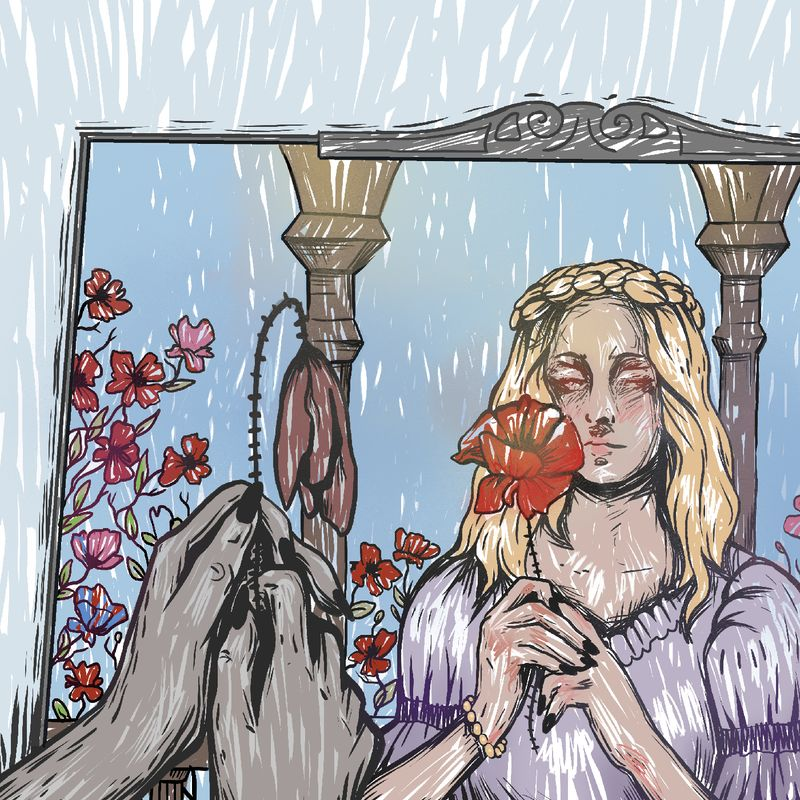
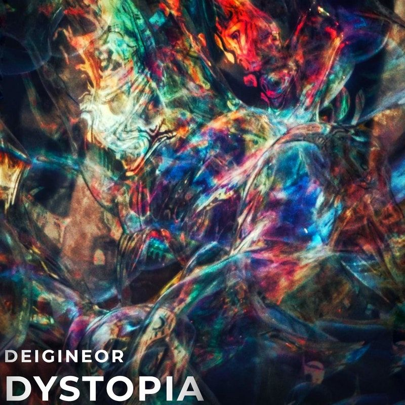
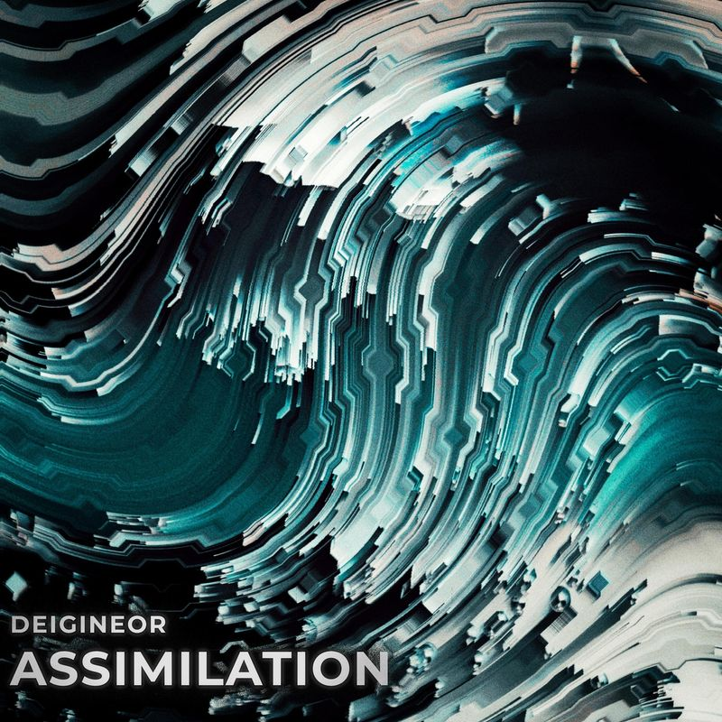
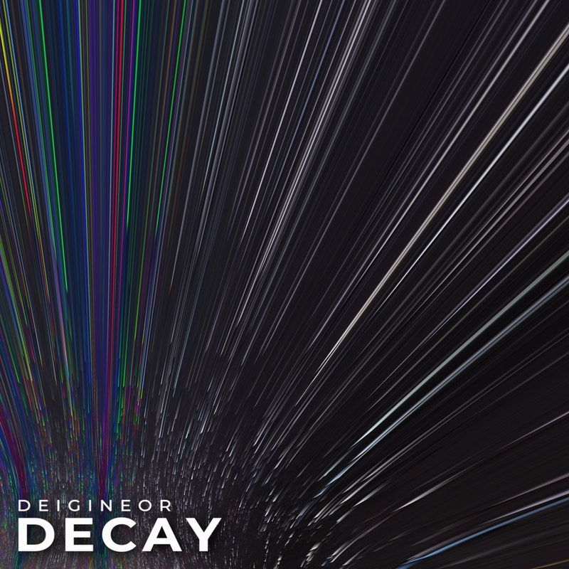
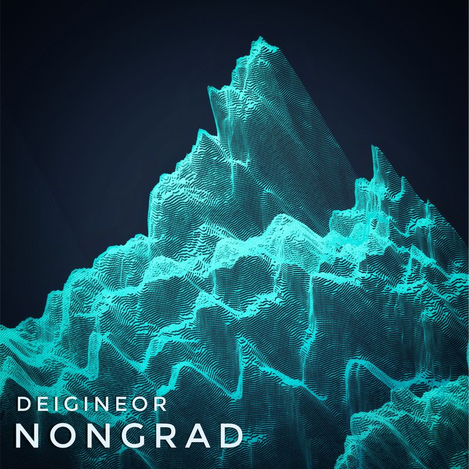
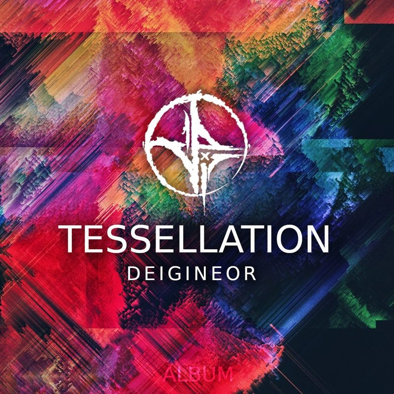
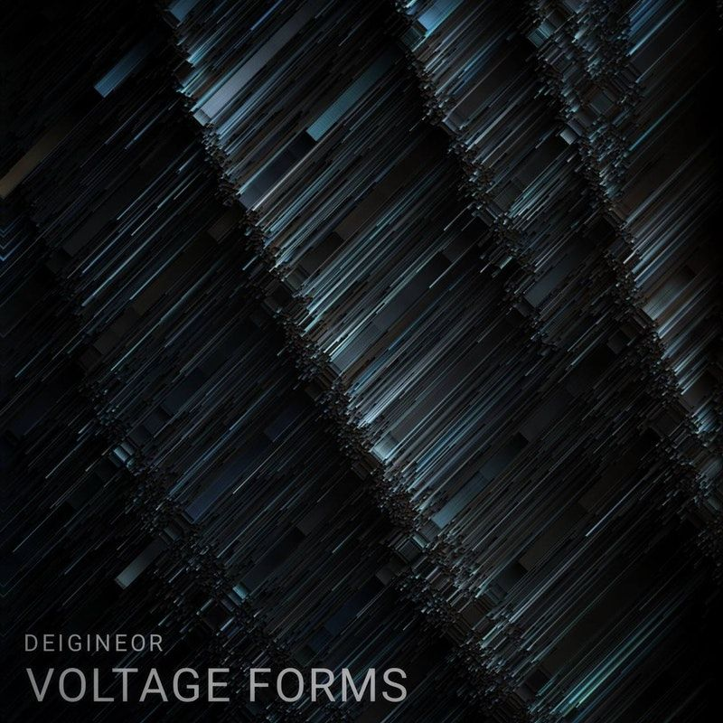
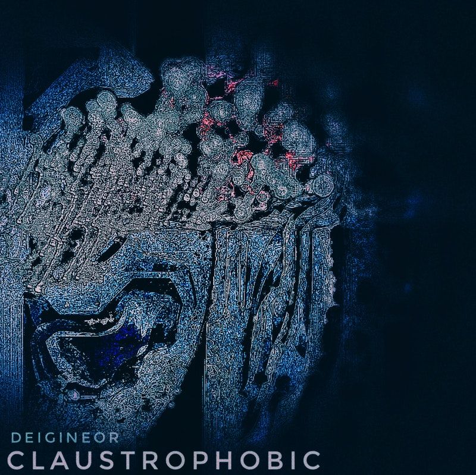
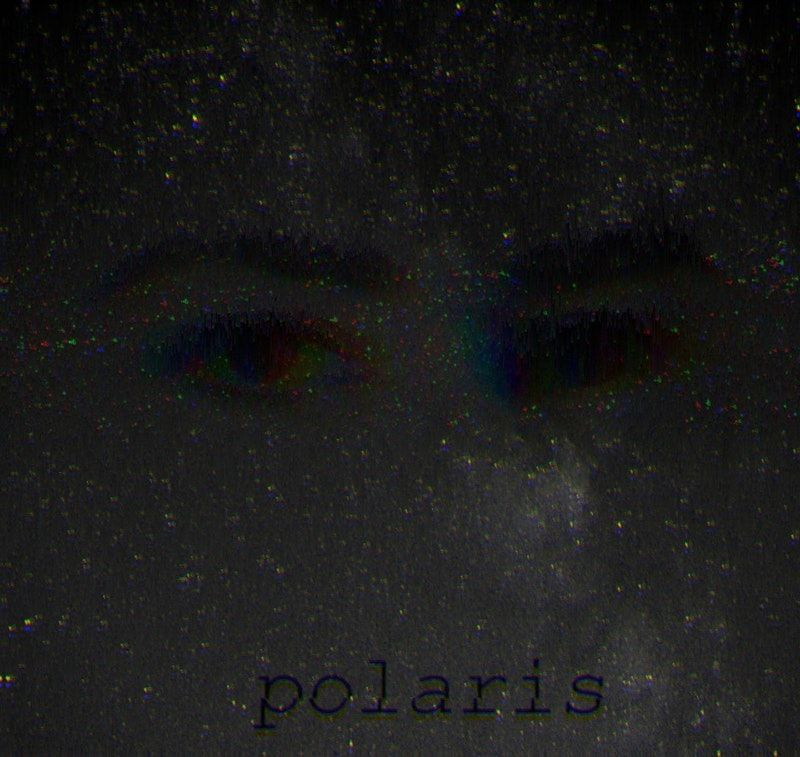
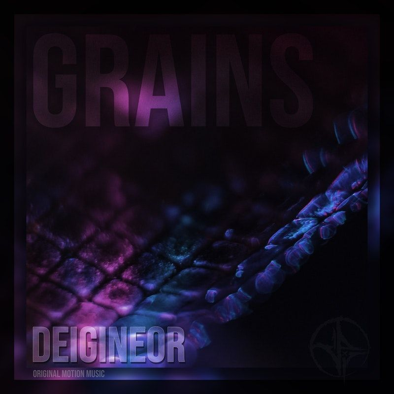
About
Hi, I'm Deigineor, soundproducer from Ukraine and I love creating, looking for a new sound to my compositions.
From an early age I was fascinated by creating music.
For 7 years now, I've been making tracks in completely different genres so that each of you can feel how I feel.
Experience solitude from Dark Ambient to massive electronic grooves.